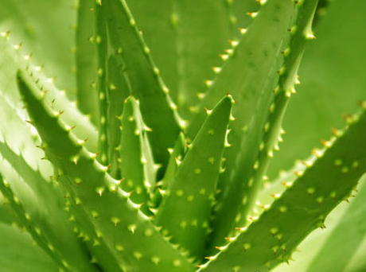

方法一 原料： 芦荟30克、 黄芪10克、 当归10克 做法： 1.将芦荟除去外皮和刺，留下肉。 2.将黄芪和 当归磨成粉后混合。 3.将芦荟和中药粉加入少量水调和成粉末状。敷于面部15分钟即可。  方法二 材料：鲜芦荟叶1片， 蜂蜜 制法：芦荟叶洗净切成小片，放入锅中，加水500毫升煮沸后再小火煮15分钟，滤去芦荟渣，取虑 液，加入蜂蜜即成。饮用同时，用鲜芦荟切片涂抹青春痘，每日1次。 功效：芦荟有抗菌、消炎和缓泻的作用，可以排毒养颜，对去痘有较好的疗效。